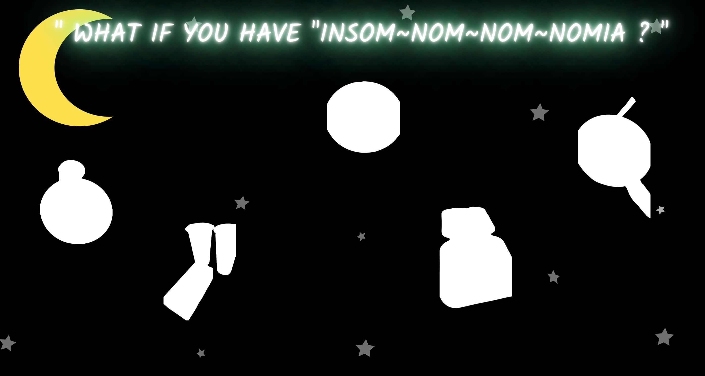
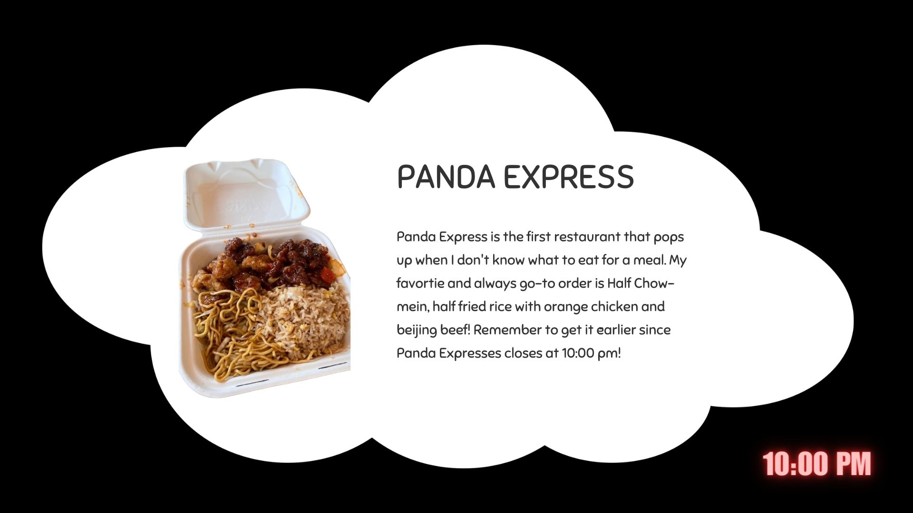

Process Visualizations


I plan to turn my title into neon- light font and adding flickering animation to the text as if it’s a neon LED light at night. This could effectively foster more of a late night atmosphere along with the late night sky background when the users first see the website.
In terms of the flipping function(can't really be shown through the images ), I plan to have the image flip first and reveal itself when the mouse hovers on it instead of revealing itself first when flipping. This could create more of a sense of mystery and curiosity like a card flipping.
For small details, I plan to adjust the flowing motion by modifying the flowing direction and timing differently for each floating image.
For the modal, I plan to change the shape from a common rectangular shape to a cloud shape to enhance my theme of late night by having cloud element. I also plan to add a timing in neon-LED light font at the right corner on my overlay page to suggest it’s very late at night along with the meals idea to create a late night atmosphere.